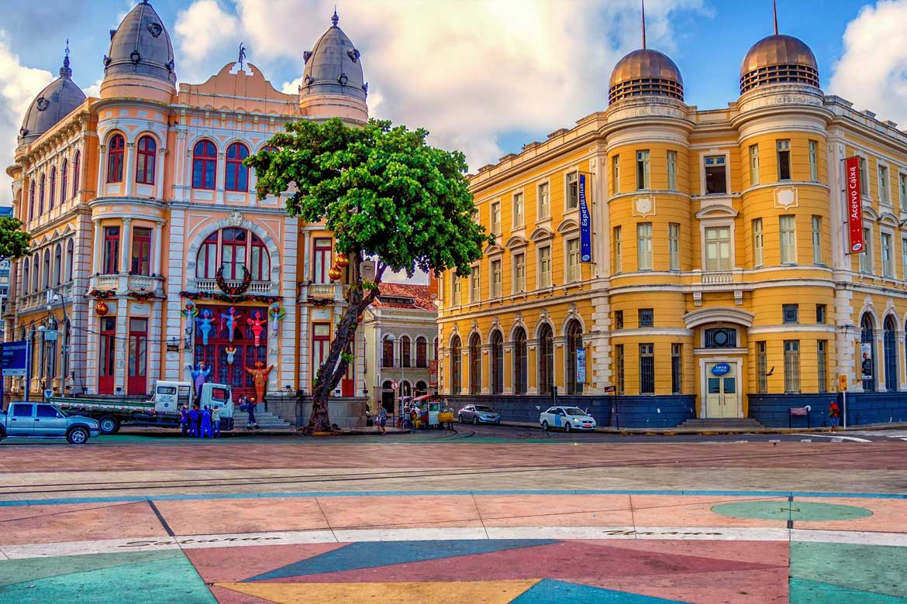

O Marco Zero é um dos pontos turísticos mais emblemáticos da cidade do Recife, localizado no bairro do Recife Antigo. Este marco simbólico marca o início da contagem das distâncias das estradas de Pernambuco e é um local de grande importância histórica e cultural.
O Marco Zero é caracterizado por uma rosa dos ventos desenhada no chão, que indica os principais pontos cardeais e também por um grande obelisco.
Além disso, o local oferece uma vista deslumbrante do Rio Capibaribe, onde é possível fazer passeios de barco e apreciar a beleza dos manguezais.